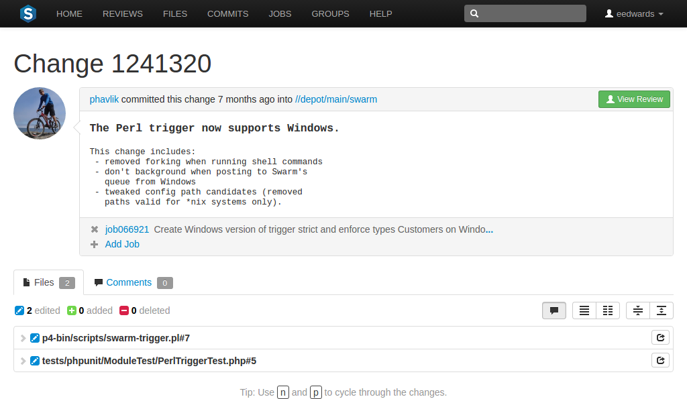

Changelists
Changelists are the basic unit of versioning work in Perforce. A changelist is a list of files, their revision numbers, and the changes made to those files. Commits is a shorter synonym used throughout Swarm.
Tip
More information is available about:
Browsing changelists.
Browsing a user's shelved changelists.
Swarm's internal use of changelists to facilitate code reviews.
Changelist Display
View a specific changelist by clicking on a linked changelist number, or by visiting the URL:
https://myswarm.url/changes/changelist number
When Swarm displays a change, the presentation is similar to:

The changelist display includes:
-
The avatar and userid of the user who made the change
-
The time the change was made
-
The common depot location containing all the files included in the change
-
The description of the change
-
A list of jobs that this change fixes, if any. You can add jobs and unlink jobs here.
-
The list of files included in the change, including any folders between the common depot location and the file, and the file's version number.
-
A tab to review any comments made regarding the change, or any of its files.
Each file is presented in a diff display, showing you whether the file was added, modified, or deleted. For text-based and image files, Swarm can display any changes made within the file. For changes with only a single file, the diff display is the default; otherwise each file is listed. Click the filename to see the diff display. See Diffs for more information.

The button indicates the current state of this change; no Review record has been created. Clicking on starts a code review for this change. For more information, see: Start a review.
Important
If your Helix Versioning Engine is configured as a commit-edge deployment, and your normal connection is to an edge server, Swarm refuses to start reviews for shelved changes that have not been promoted to the commit server.
Within Swarm, this means that the Request Review button does not appear for unpromoted shelved changes. Outside of Swarm, attempts to start reviews for unpromoted shelved changelists appear to do nothing. Ask your Helix Versioning Engine administrator for assistance if you cannot start a review.
An administrator of the Helix Versioning Engine can automatically promote
shelved changes to the commit server by setting the configurable
dm.shelve.promote to 1.
When a file in a changelist has one or more associated comments, an icon appears near the far right of the file's entry.